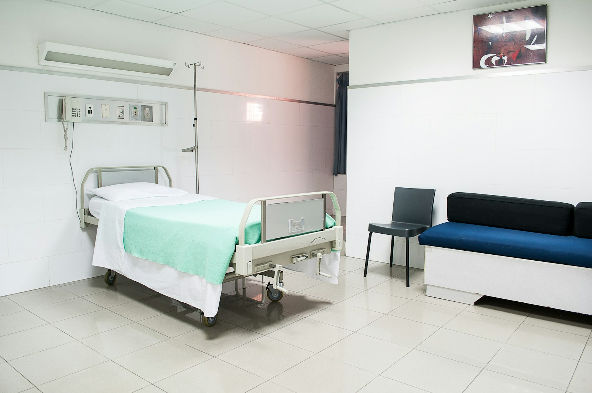

01
三餐与营养
营养师按季节配餐，软硬度可选。
有忌口，提前一天告诉厨房就好。
每日 3 餐 2 点可送房
🍃 A SLOWER KIND OF CARE
梅麓疗养院坐落在城郊的山坡上，有树、有风、有一整面朝南的窗。我们照顾需要长期调养的长者，也照顾每一个想慢下来的人。
22°C · 空气优
庭院里的桂花开了
位长者在这里住过
其中 87% 由家属推荐绕林荫小路走一圈
上午十点，树影刚好落在路面上
🍃 WHAT WE TAKE CARE OF
护理不是清单，是每天重复的、温和的照看。我们把它们写下来，家属随时可以查。

营养师按季节配餐，软硬度可选。
有忌口，提前一天告诉厨房就好。
协助洗漱、移位与康复训练。
天气好的时候，一起去院子里走走。
夜里有一名护士值整个夜班。
每两小时巡一次房，脚步很轻。
 THE ROSE PERGOLA / MORNING19°C
THE ROSE PERGOLA / MORNING19°C
THE ROSE PERGOLA
架子上是院里种了十几年的藤本月季，五月开得最密，花瓣落满石板路。天气好的上午，护理员会把椅子搬到架下，愿意出来的长者就在这里坐一会儿，晒晒太阳，等午饭。
LETTERS FROM FAMILIES, KEPT PRIVATE
以下摘录已获得家属同意。
“住进来以后，我母亲气色好了很多。可她总说，夜里有人站在床边。护士说是巡房。可她床边的地板上，早上总多出一双鞋印。”
“这里把一切都安排得很好。可我们数过：这些年收到的探访登记里，有些签名不是我们的。日期却都对得上。”
“如果你正在考虑，这里确实不错。别答应夜班护士帮你锁门。锁上的门，第二天早上还是开的。而且房间里的椅子，数量会变。”
所有来信均已匿名处理。
读到这里，你会发现一件事
THEATRE FEED / LIVE
B 区小楼 · 04:33
监控记录：无异常
 04:29:41CAM 01 / HALL
04:29:41CAM 01 / HALL
04:31:07CAM 02 / ROOM一楼走廊无人。门灯正常。
三号房床上有一处凹陷。登记入住人数：0。
三号房门前出现一名穿白大褂的人。排班表上今晚无人值班。
该员工的工牌在 1971 年已注销。
他正看向镜头。请不要与他对视。
他已经站在那里很久了。现在，他正向你的房间走来。请保持安静，不要开门。
你已进入 B 区夜间病区
走廊尽头的灯，一直亮着。
你还没有被找到。
「现在，开始查房吧。」
他不需要你的同意。